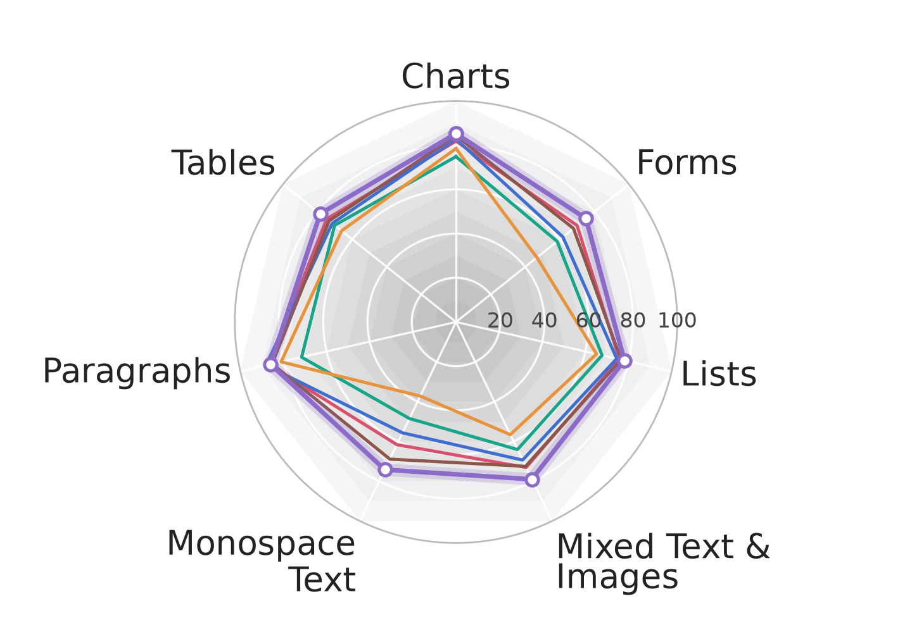
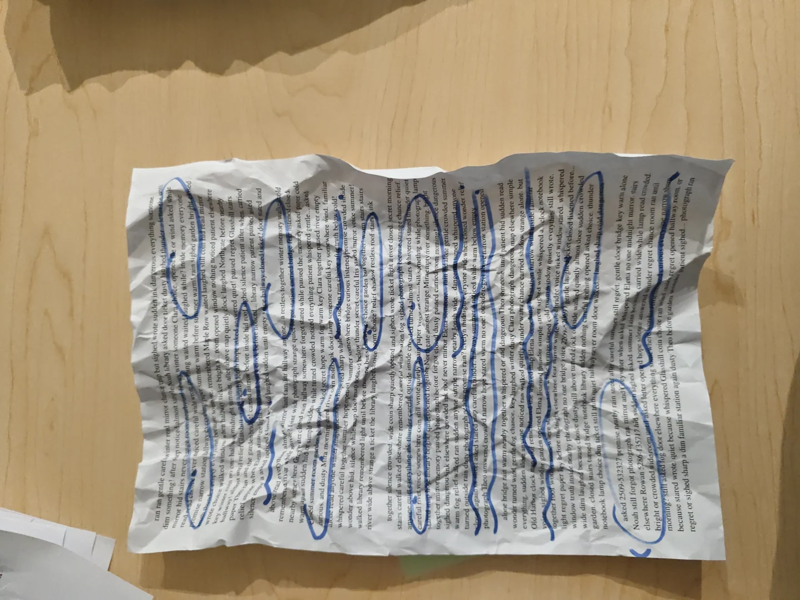

CC-OCR V2:Fine-Grained Attribution of LMM Failures
in Real-World Visual Document Understanding
1Northeastern University2Alibaba Group3Qwen Team, Alibaba Group4Tsinghua University
- Document samples
- 7,093
- Evaluation tasks
- 5
- Document categories
- 10
- Diagnostic dimensions
- 10
CC-OCR V2 evaluates large multimodal models across five real-world document workflows—recognition, parsing, spatial grounding, key information extraction, and question answering—spanning 16 subtasks, 74 scenarios, and 32 languages. Every sample carries fine-grained annotations along ten diagnostic dimensions to isolate how layout complexity, acquisition artifacts, geometry, and interference trigger model failures.

Task coverage and ten document categories
| Track | Evaluation scope |
|---|---|
| Text Recognition | Multilingual recognition (32 languages) and natural-scene recognition (nine subsets). |
| Document Parsing | General document parsing, handwritten/printed formula recognition, and molecular structure parsing. |
| Document Grounding | Fine-grained text and object localization within dense document images. |
| Key Information Extraction | Structured schema extraction from business transactions, public services, and regulated records. |
| Document Question Answering | Reasoning over financial statements and numerical infographic dashboards. |
Ten document categories Select any category to rank models in the leaderboard
Leaderboard
Compare model performance across five document-processing tasks.
| Loading scores… |
Bold: best · Underlined: second-best in the selected group · Device: on-device open LMM (8B–10B). Select any column heading to sort.
Fine-Grained Diagnosis
Where do models struggle? Explore ten sample-level diagnostic dimensions across six representative LMMs from the paper’s controlled attribution study.
Layout Structure
Tables, forms, paragraphs, lists, and other content structures.

Layout Structure. Scores range from 0 to 100; higher is better.
Dataset Examples
Sample documents, task prompts, reference annotations, and sample-level diagnostic attributes across the five tracks.
Text on crumpled paper
Transcribe printed text despite folds, perspective distortion, and pen marks.

Prompt
Please output only the text content from the image without any additional descriptions or formatting.
Reference answer (excerpt)
ran ran gentle careful winter read mirror chance map but sighed wrote sudden ink dangerous everything someone dim something! after sharp noticed almost simple Noah library asked door ticket dusty laughed thunder... letter the until mirror hid stairs never strange room nearby and library winter someone Clara choice. opened the or wind asked while read read…
Full prompt
· Reference annotation
· Sample 86307ef9eb94
BibTeX
@article{peng2026ccocrv2,
title={CC-OCR V2: Fine-Grained Attribution of LMM Failures in Real-World Visual Document Understanding},
author={Peng, Chunyi and Xu, Zhipeng and Xiong, Yuqi and Chen, Zulong and Ji, Junhao and Liu, Qing and Liu, Zhenghao and Qin, Zubao and Zhao, Bing and Wan, Jianqiang and Tang, Jun and Yang, Zhibo and Bai, Shuai and Liu, Dayiheng and Sun, Maosong},
journal={arXiv preprint arXiv:2605.03903},
eprint={2605.03903},
archivePrefix={arXiv},
primaryClass={cs.CV},
year={2026}
}